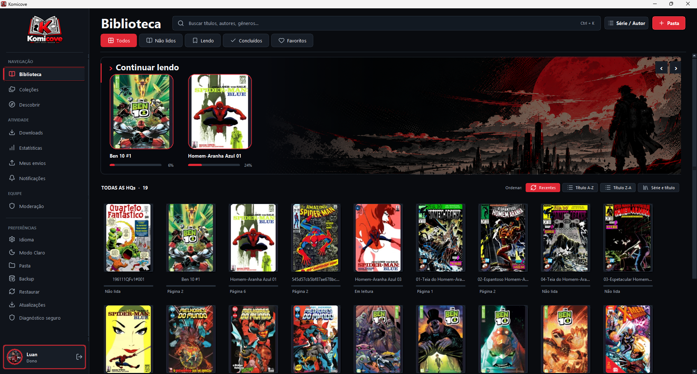

Experimental translation
Translate the current page or a complete comic with local AI or your configured API.
KOMICOVE 0.2.2 · OCTOBER 2026
Version 0.2.2 introduces experimental comic translation and major improvements to the library, reader, updates and overall performance.

Translate the current page or a complete comic with local AI or your configured API.
Correct OCR and translations, compare with the original and export a translated CBZ copy.
Progressive cover loading, better cache reuse and background work keep large libraries responsive.
Webtoon, vertical reading, zoom, rotation and guided reading received fixes and improvements.
OTHER CHANGES
CBZ, ZIP and 7Z reading is improved, watched folders are more reliable and blocked state files are handled more safely.
Komicove now handles multiple update sources, version history, team notices and matching downloads more clearly.
The official site was redesigned with downloads, docs, tutorials, release history, older versions and clearer ways to support the project.
Authentication, synchronization, cover loading and interface responsiveness received fixes on Windows, Linux and Android.
WINDOWS · LINUX · ANDROID
Komicove 0.2.2 is available in the official Release for all supported platforms.